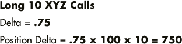
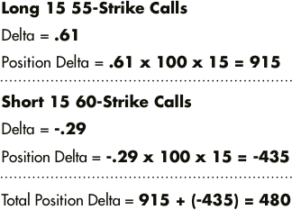

Keeping an Eye on Position Delta
In Meet the Greeks we discussed how delta affects the value of individual options. Now let’s have a look at how you can take delta to the next level. “Position delta” enables you to keep track of the net delta effect on an entire gaggle of options that are based on the same underlying stock.
Think of position delta this way: options act as a substitute for a certain number of shares of the underlying stock. For any option position on one specific stock, you can add up the deltas of all the option contracts and figure out how many shares of stock the entire gaggle of securities is acting like. That way, you’ll always know off the top of your head how it should react when the stock makes a one-point move in either direction.
How Options act as a substitute for shares of Stock
A single call contract with a delta of .01 is a substitute for one share of stock. Here’s why.
If the stock price goes up $1, the call should go up by one penny. But generally speaking, an option contract will represent 100 shares of stock. So you need to multiply the delta by 100 shares:
$.01 x 100 = $1.
That means if the price of the stock increases $1, the value of your call position should also increase $1. So in essence, it’s behaving like one share of stock.
Owning a single call contract with a delta of .50 is similar to owning 50 shares. When the underlying stock goes up $1, the value of the option should increase by $.50. So the value of the overall position will increase by $50. ($.50 x 100 share multiplier = $50.)
It works the same way with puts, but keep in mind that puts have a negative delta. So if you own a put contract with a delta of -.50, it would act like a short position of 50 shares. If the underlying stock goes down $1, the value of the option position should go up $50.
Calculating Position Delta for a single-leg strategy with multiple contracts
Example 1:
Here’s an example. Say you own 10 contracts of XYZ calls, each with a delta of .75. To calculate position delta, multiply .75 x 100 (assuming each contract represents 100 shares) x 10 contracts. This gives you a result of 750.
That means your call options are acting as a substitute for 750 shares of the underlying stock. So you can figure if the stock goes up $1, the position will increase roughly $750. If the underlying stock goes down $1, the position will decrease roughly $750.
Calculating Position Delta for multiple legs and multiple strategies
Much of the time your option strategies will be more complex than a few call options with the same strike price. You might use multi-leg strategies, and you might even run different strategies on the same underlying stock at the same time.
Each of those strategies might involve options with different strike prices and expiration dates. For example, you might wind up running an iron condor and a long calendar spread with calls simultaneously on the same underlying stock.
The deltas of some individual options in the complete option position will be positive and some will be negative. But even if the strategies you’re running are complex, one glance at position delta can give you a feel for how the value of the position should change if the stock moves one point in either direction.
Example 2:
We don’t want to clutter up this section by doing the math across six or seven different legs among several strategies. So let’s look at an easy example of how you calculate position delta for a simple multi-leg strategy. For instance, consider a long call spread with two legs.
Example 2 shows the details of an XYZ long call spread with a long 55-strike and a short 60-strike, both with the same expiration date. Imagine that with the stock trading at $56.55, we bought 15 contracts of 55-strike calls with a delta of .61 and we sold 15 contracts of 60-strike calls with a delta of .29.
Calculating Leg 1
The delta of the 55-strike call is .61. So to determine the total delta, we multiply .61 x 100 share multiplier x 15 contracts. That equals 915.
Calculating Leg 2
The delta of the 60-strike call is .29. However, since you’re selling the calls, for this part of your position the delta will actually be negative: -0.29. So the short 60 calls’ total delta is -.29 x 100 share multiplier x 15 contracts. That equals -435.
Calculating Total Position Delta
Now you simply add the deltas from each leg together to determine your position delta: 915 + (-435) = 480. So the theoretical change in position value based on a $1 move in the underlying stock is $480. Therefore, the total value of this position will behave like 480 shares of stock XYZ.
How position delta helps you to manage your risk
Your net position delta for options on any underlying stock represents your current risk relative to a change in the stock price. In the long call spread example, you’d need to ask yourself if you’re comfortable with having the same risk as being long 480 shares of XYZ stock. If not, you may want to attend to that risk. You can do so by closing out part of your position or by adding negative deltas, perhaps by buying puts or selling stock short.
The same logic applies if you hold a position with a high negative delta. You will have the same risk as a short position in the stock. To adjust your risk, you could dump part of your position, buy calls, or buy the stock.
Don't forget about gamma
Just as gamma will affect the delta of one option as the stock price changes, it will affect the net delta of your entire position as well. So it’s important to keep in mind that your position delta will change with every little movement in the stock. And gamma’s effect on position delta can be huge, because we’re talking about multiple option contracts.
The number of shares for which your options act as a substitute will change every time the stock price changes. That’s why it’s a good idea to keep an eye on your position delta throughout the life of your option position.
If you have a TradeKing account, keeping an eye on position delta is easy. Just look at the “Option View” in your “Holdings” page, or use the Profit + Loss Calculator, and we’ll do the math for you.
Today's Trader Network
|
All-Star Trade Report |
Options Guy Blog |
Videos, webinars and more |